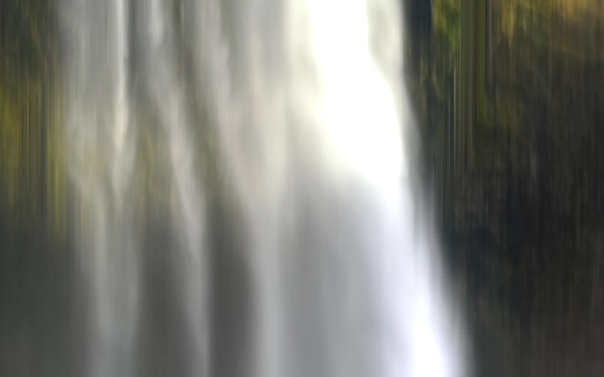
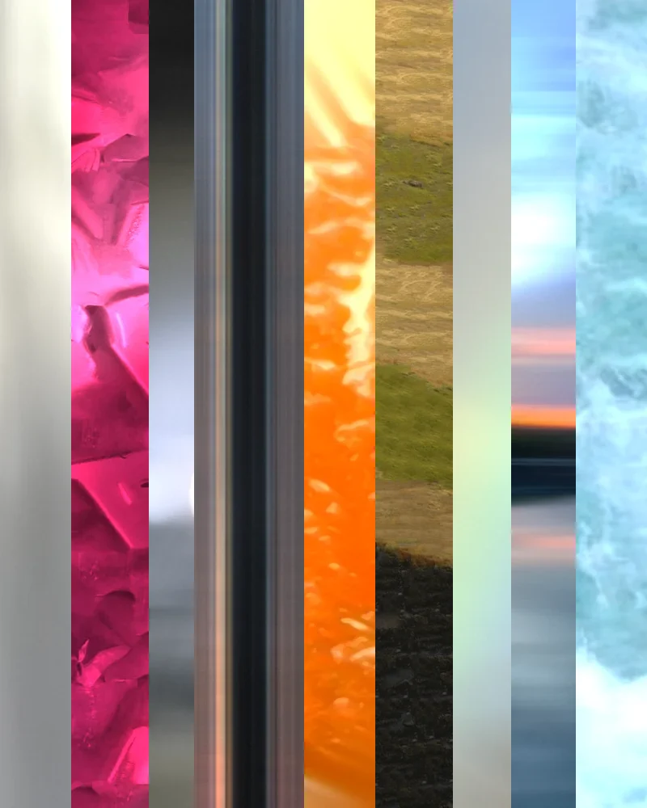
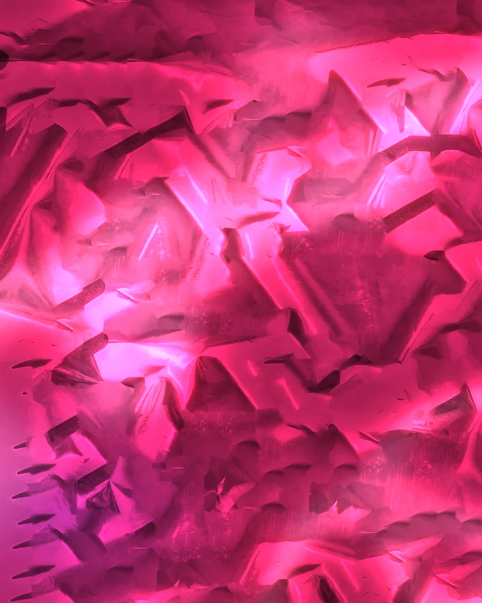
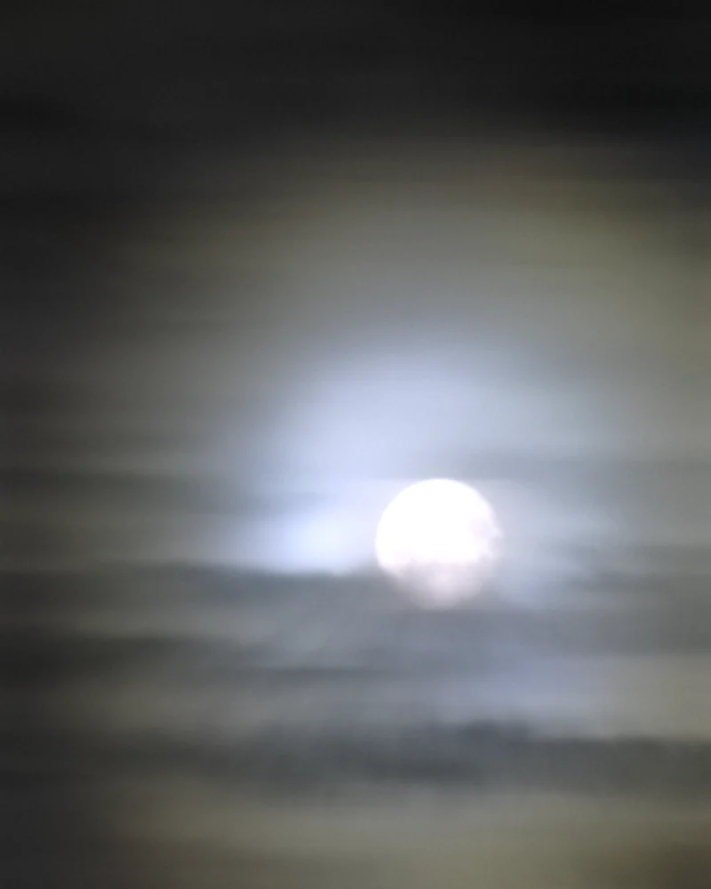
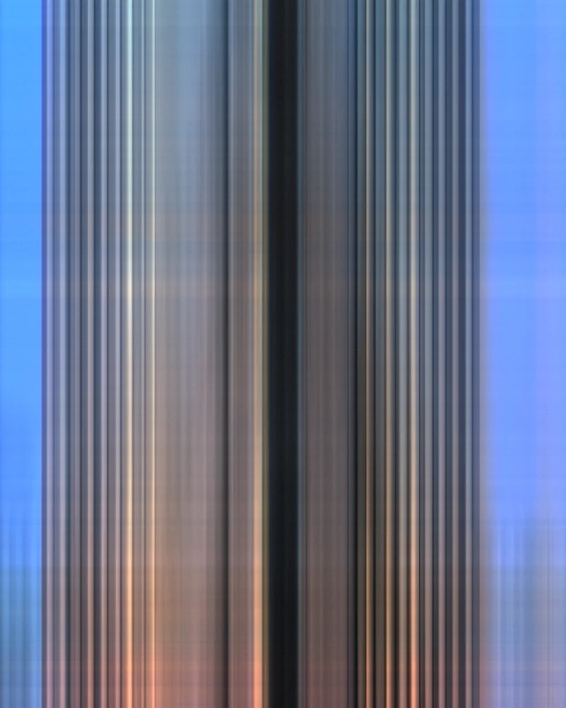
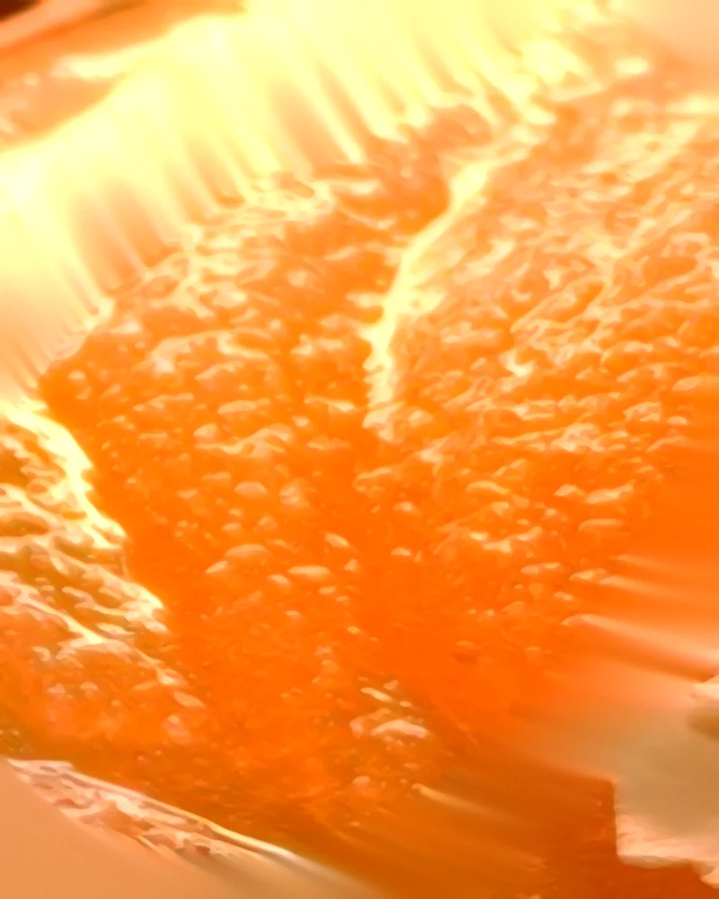
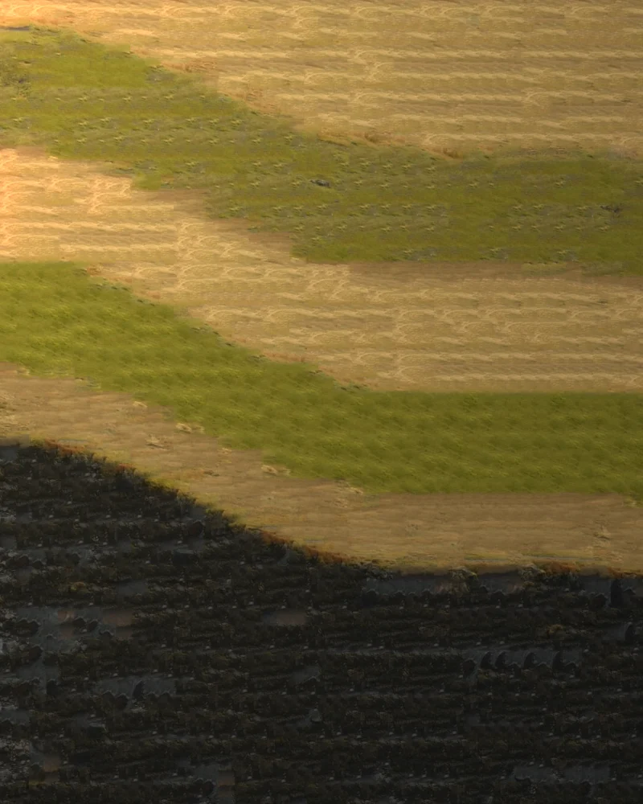
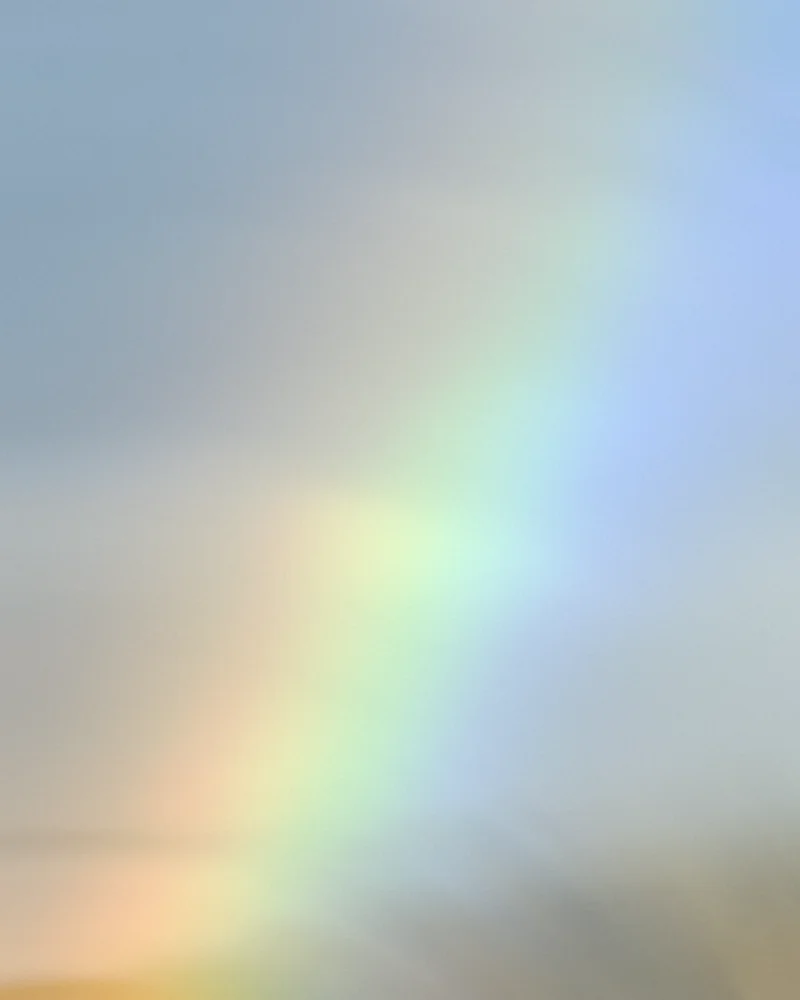
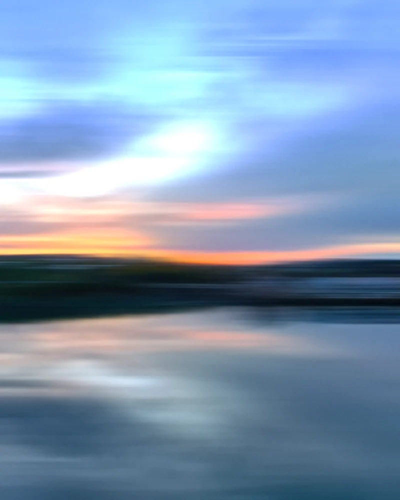
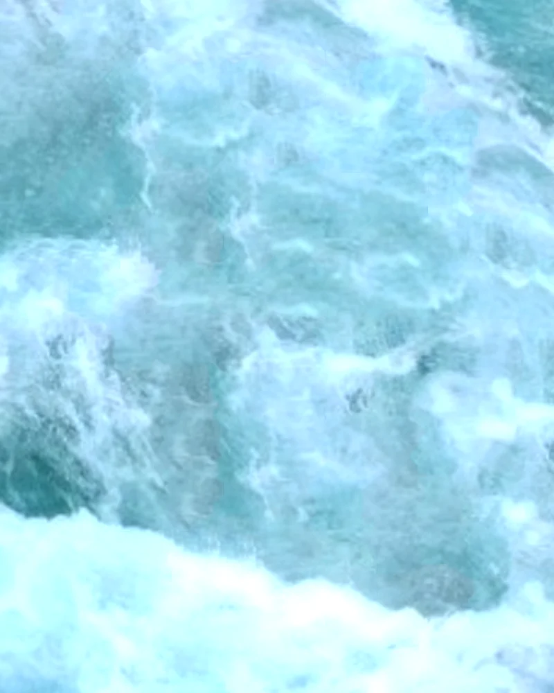

质感卡片
这一版不再用代码去画东西。每张卡片都从参考照片本身出发：取画圈的那一块，交给一套照片纹理算法——拖曳曝光、流线卷积、各向异性 Kuwahara、图像绗缝和纹理迁移——把它变成一张抽象的纹理。光、渐变和质感都是照片自己的像素。
瀑布、月晕、彩虹、天水镜像、冰泉会顺着当初拖曳的方向慢慢流；鼠标移上去是一盏柔光，字底下是一块液态玻璃。


- 取样
- 画圈的水幕，连着两边长苔藓的岩壁
- 算法
- 竖向拖曳曝光：一层往上下各拖 170 像素，拉成丝一样的水幕；一层单向拖尾 60 像素，留住水花的细节。底部抬一层模糊提亮的水雾，亮处泛光
- 留下
- 水的丝感、逆光的亮、苔绿的暗底


- 取样
- 另外九张纹理，各取中间一条竖条，宽窄不一地排开
- 算法
- 上面一块液态透镜跟着鼠标走，边缘把竖条往里压、分出色边；字底下一块磨砂
- 留下
- 九种质感隔着玻璃的样子：透镜边上压弯，磨砂处糊成过渡


- 取样
- 零食袋的镀铝膜，避开印刷的大字、纸箱和红圈
- 算法
- 图像绗缝：切成 56 像素的小块，按重叠误差挑块、沿最小误差的路径缝起来，拼成没有字的整张皱膜；再用各向异性 Kuwahara 压成亮面色块，斜向轻拖
- 留下
- 洋红的金属光泽、背光处转紫、零星的黑色碎片


- 取样
- 薄云里的满月（这张没有画圈，取月亮和四周的云）
- 算法
- 两次曝光叠在一起：横向拖 80 像素，云变成一条条横带；从月亮往外放射拖尾 50 像素，拖出光晕。月亮留一点形，大半径泛光
- 留下
- 冷白的光心、一圈圈暗下去的晕、云的层次


- 取样
- 塔身一级级往外退的那段柱子
- 算法
- 竖向拖曳曝光：往上下各拖 220 像素，再叠一层 70 像素的单向拖尾
- 留下
- 柱子排成的序列，混凝土的暖灰对两边的钴蓝，底下的暖灯拖成光


- 取样
- 画圈的那块冰面
- 算法
- 放大后用各向异性 Kuwahara（8 个扇区、半径 5）把冰粒压成有光泽的小块，再绕着杯心短拖一下，留出挖痕的弧
- 留下
- 橙色从里往外透的光、奶白的高光、颗粒感


- 取样
- 河边的苔藓、草坡和玄武岩
- 算法
- 纹理迁移：先按参数画一张倾斜的地层构图，再从照片里挑草、苔、石头的小块把它拼出来（三轮，块从 48 像素缩到 22 像素），最后顺着地层轻拖
- 留下
- 土黄、橄榄、亮苔绿、炭黑，每一块都是照片里真的草和石头


- 取样
- 雾里的那段彩虹和它后面的天
- 算法
- 绕着虹心转着拖：长的一层 130 像素把虹拉成干净的光带，短的一层 40 像素留住雾的层次
- 留下
- 粉彩的七色、灰蓝的天、没有硬边的雾


- 取样
- 日落的天、地平线和水里的倒影
- 算法
- 横向拖曳曝光：120 像素一层、36 像素一层叠起来；页面上再让水面有一点上下的细波
- 留下
- 深蓝到淡紫到地平线的暖橙，倒过来偏冷的水


- 取样
- 画圈的那潭乳蓝的水（避开红圈）
- 算法
- 图像绗缝：只用水面的块拼成整张，没有岸也没有石头；再绕一个中心轻轻转着拖
- 留下
- 乳白的水花、青绿的深处、水流的丝
纹理算法
都在 tools/texture.py：每张卡片一个配方，由下面几种公开的做法组合，参数写在配方里，换一张照片、换一组参数就是一张新纹理。
- 拖曳曝光
- 摄影里「有意识的相机移动」（ICM）：每个像素沿一条设计好的路径——竖直、水平、绕圈、放射——把照片积分起来。竖拖出水幕，横拖出天际线，绕圈拖出弧。
- 流线卷积
- Line Integral Convolution（Cabral & Leedom 1993）：沿照片自己的纹理走向抹开；走向由结构张量算出（Kyprianidis 等的边缘切向流）。
- 各向异性 Kuwahara
- Kyprianidis、Kang、Döllner 2009，多项式权重版：油画式的抽象，保住边，把细碎的东西按走向压成有方向的色块。
- 图像绗缝
- Image Quilting（Efros & Freeman 2001）：把照片切成小块，按重叠处的误差挑块，沿误差最小的路径缝起来，拼成更大的、没有具体物体的纹理。
- 纹理迁移
- 同一篇论文的第 4 节：按一张参数化的构图去挑块，构图是设计的，纹理全是照片的。
- 沿流向修补
- 先认出画上去的红圈，沿拖曳的方向多尺度扩散补掉，拖完不留接缝。